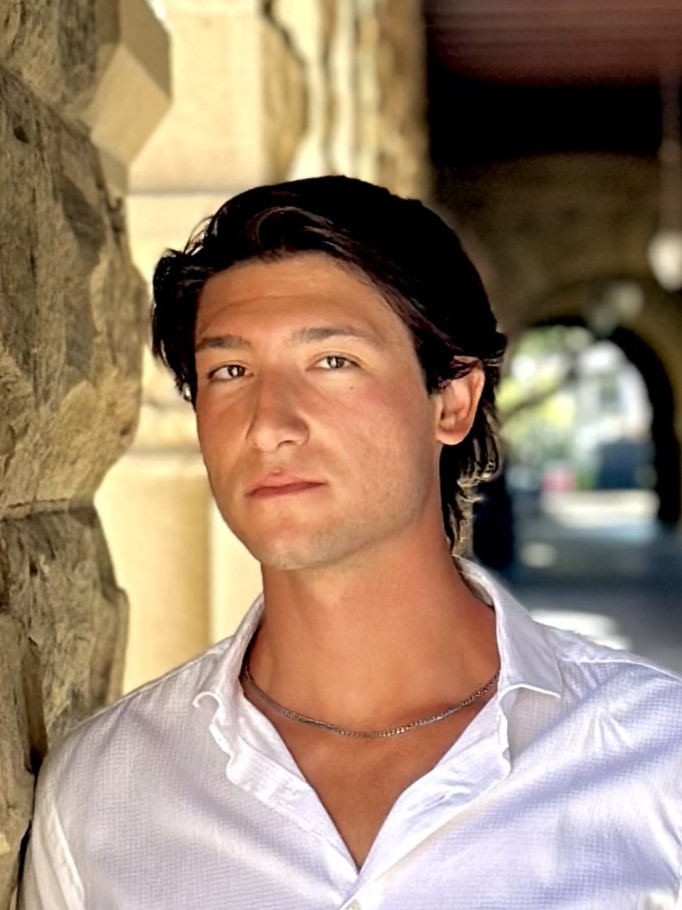

Luca Borgianni
University of Pisa, Italy
Learning to Extract and Send Semantics
Application-driven semantic extraction
Exploring the extraction, representation, communication, and evaluation of task-sufficient semantic information, from physical observations to downstream application decisions.

University of Pisa, Italy
Politecnico di Milano, Italy
Which information does a receiving application actually require, and how can its sufficiency be demonstrated?
Traditional communication systems transport source data without asking whether the downstream task needs those observations in full. LESS studies the preceding engineering question: how should task-relevant information be specified, extracted, represented, placed across device, edge and cloud, and delivered to the application?
The workshop connects semantic, goal-oriented and task-oriented communication with application-aware sensing, Edge AI, distributed inference and experimentally validated networked systems. The emphasis is on the complete observation-to-decision chain, not semantic abstraction in isolation.
Illustrative mappings, not prescribed use cases or results. A submission must define its own application requirements and evaluate them.
What information does a downstream application need? How can it be extracted and communicated? LESS 2027 welcomes contributions that investigate how these choices affect application performance, communication overhead, latency, and computing-resource consumption.
Read the full scope and topics ↗Current ICIN 2027 workshop deadlines. Please check the conference website for updates.
* Workshop scheduling is subject to the final ICIN 2027 program. The host conference runs 15–18 March 2027.